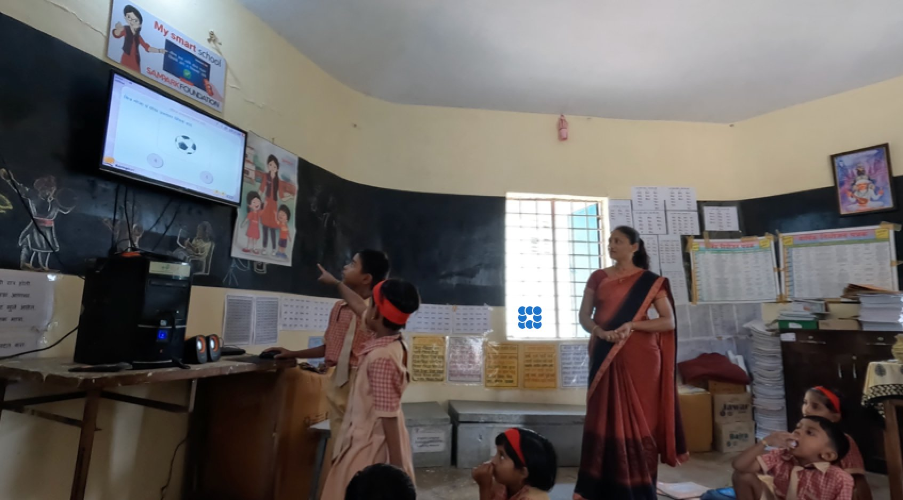
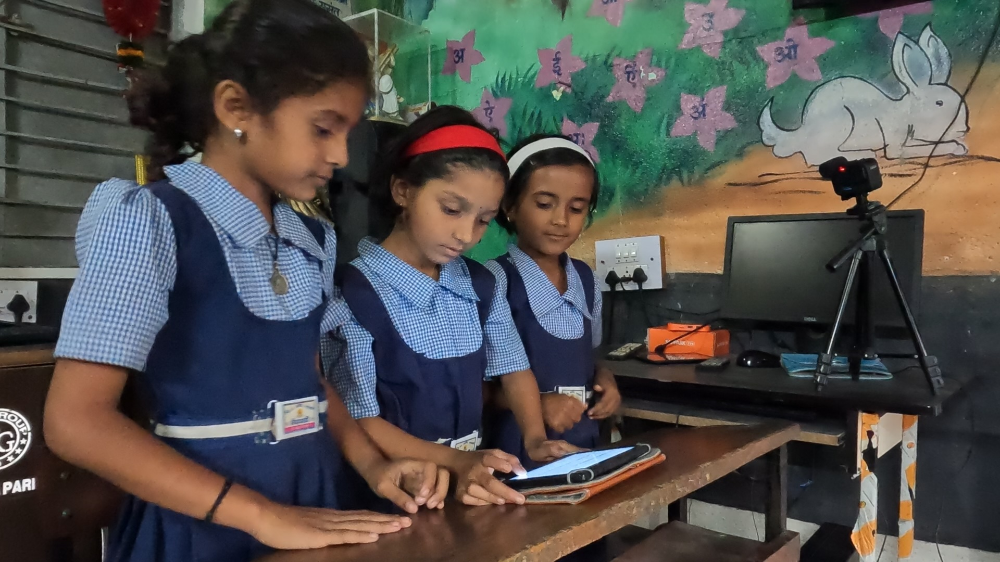
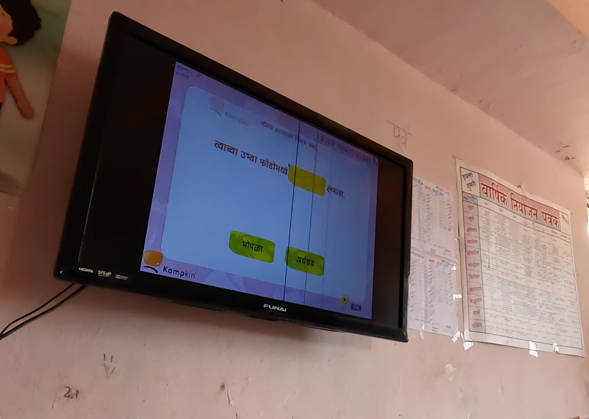

PHD RESEARCH · KING'S COLLEGE LONDON
India's government rolled out digital learning tools across thousands of public schools. Dashboard data showed strong adoption. But no one had gone into the classrooms to check. Over several months, I observed, interviewed, and filmed across urban and rural schools in Maharashtra, speaking to 30 people across six stakeholder groups and collecting over 40 hours of classroom video. What I found was a gap between what the platform measured and what was actually happening in the room. Teachers were manually pacing software that had no pause button, delegating mouse control to students who taught themselves how to hold the interface in check, and quietly building coordination systems the software never accounted for. None of this showed up in any dashboard.

The Research Context
India's National Education Policy 2020 put digital technology at the centre of education reform (tablets, software platforms, online assessments) for hundreds of millions of children. When administrators checked the reports, the technology appeared to be working. But many of these schools deal with power cuts, unreliable internet, and teachers managing multiple grade levels in one room.
I wanted to understand what happens when the product meets those real conditions. I chose Maharashtra, one of India's largest states, and deliberately picked schools in both urban and rural areas so I could compare how the same policy and the same software played out in very different environments.
How is India's digital education policy interpreted, mediated, and enacted across organisational and classroom levels, and how do teachers and students engage with, adapt, and repurpose the technologies that arrive as a result?
How I Scoped This Research
I designed this study from the ground up. The research question, methodology, stakeholder recruitment, and fieldwork execution were all my own. The core challenge was that existing data (platform usage logs, training attendance figures) told a success story, but no one had observed what was actually happening in classrooms. I framed this as a product-context gap: the difference between what the system logs and what users actually do around the system.
To map the full ecosystem, I developed stakeholder personas before entering the field, not just the obvious users (teachers and students), but the intermediary actors who shape how the software lands in classrooms: NGO coordinators, district education officers, teacher trainers, and school heads. This helped me understand that the "user" of education software isn't just the person clicking. It is a network of people making decisions about what gets deployed, how it gets taught, and what gets reported.
Stakeholder Personas
I mapped six stakeholder groups before fieldwork to guide my recruitment strategy and interview protocols. Each group had a different relationship to the software and different incentives around its success.
The Policy Architect
State education coordinators & policy administrators
Set targets for technology adoption. Measure success through platform usage metrics and training completion rates. Rarely see classrooms firsthand.
The Compliance Bridge
District & regional education officers, monitoring staff
Translate policy mandates into school-level directives. Absorb contradictions between policy ambition and classroom reality. Their reporting shapes what decision-makers believe is happening.
The Field Translator
NGO coordinators, facilitators & programme heads
Train teachers on the software. Adapt official guidance to local conditions. Often the first to see workarounds but have no channel to report them upward as design feedback.
The Classroom Orchestrator
Primary & secondary school teachers
Run their own pacing system on top of software that wasn't built to be paced. Manage 15–20 students, a shared screen, and a student assistant, all in real time, often in multiple languages.
The Interface Operator
Student assistants
Delegated mouse control by the teacher. Must read the teacher's cues, maintain cursor neutrality, and time clicks to the pedagogical sequence, none of which appears in any training guide.
The School Gatekeeper
Headteachers & principals
Decide how much technology gets integrated and which teachers use it. Balance compliance requirements with practical constraints like electricity, space, and staffing.
My Responsibilities
My task was to design and execute the entire research program independently: formulate the research questions, choose the methodology, gain access through multiple layers of institutional gatekeepers, recruit across six stakeholder groups in three languages, and collect and analyse data across urban and rural field sites. Specifically, I was responsible for:
- Developing research questions that bridged policy analysis with real-time classroom interaction
- Designing a multi-level qualitative study combining interviews, ethnographic observation, and video analysis
- Negotiating access through NGOs, school administrators, district officials, and local government
- Conducting 30 interviews across six stakeholder groups in Hindi, Marathi, and English
- Setting up and managing a three-camera recording system across multiple school sites
- Performing frame-by-frame conversation analysis of 40+ hours of video, the first such study conducted in Marathi
- Synthesizing findings into actionable design recommendations and presenting them to the NGO and software partner
Research Approach
30 In-depth Interviews
Across all six stakeholder groups. Conducted in Marathi, Hindi, and English depending on what each participant was most comfortable with. I sequenced interviews by hierarchy first (policymakers, district officers) then moved to field-level actors. Early interviews revealed that official descriptions of roles glossed over work that turned out to be extraordinary, like the student assistant role.
Ethnographic Observation
Extended time in schools, training centres, and district offices: staffroom conversations, training sessions, school inspections, admin meetings. This wasn't just "being there." It was understanding the full ecosystem around the software: who makes decisions, what pressures they face, and what never gets reported.
40+ Hours of Classroom Video (3 Cameras)
I used three cameras simultaneously: one on the teacher, one on the students, one on the screen. Why three? One camera would have shown me the teacher or the students, but not how they coordinated. The real insight was in the gaps between what one person did and how others reacted. Work in these classrooms is collaborative, and you can't see collaboration from a single angle.
Conversation Analysis
Frame-by-frame analysis of video data mapping how teachers and students coordinate speech, gesture, and screen interaction in real time. The first study to do this in Marathi. This is what revealed the student assistant's sophisticated cursor work, something no interview or survey could have surfaced.

What I Found
1. Policy intermediaries aren't playing fixed roles. They are constantly shifting between different kinds of work
NGO staff, district officers, and teacher trainers are typically described as neutral conduits that pass policy from government to schools. The reality is more complex.
- These stakeholders don't just transmit policy. They actively shape what it becomes through their daily judgements about what can be shown, what can be counted, and what needs to be protected
- Much of this work is invisible to formal reporting systems, which only capture outputs like training attendance figures and platform usage logs
- Intermediaries often absorb the contradictions between policy ambition and classroom reality, so those contradictions never become visible to decision-makers
2. The software had its own logic. Teachers bent their lessons around it.
The classroom software had a fixed flow: show question, accept click, play right/wrong sound, next screen. No pause button. No way to slow down. But teachers needed to explain, discuss, and check understanding before moving on.
- They manually paused the screen by coordinating with a student assistant who controlled the mouse. The software had no way to do this on its own
- When the software said a student got it wrong but the teacher disagreed, students trusted the teacher. The software's verdict didn't matter until the teacher confirmed it
- Teachers were essentially running their own pacing system on top of software that wasn't built to be paced, doing it smoothly, in real time, with 15 to 20 students in the room
3. The student assistant's work was far more sophisticated than anyone noticed
Teachers handed mouse control to a student assistant at the start of each class. This looked simple but was actually high-stakes: click too early and the feedback sound interrupts the lesson; hover over the answer and you telegraph the right choice; hit "next" too soon and you close a question the teacher is still discussing.
Assistants developed their own system: keeping the cursor in neutral screen space while a question was live, moving toward an answer only once a student had committed, and reading the teacher's cues to know when to click. When the teacher said "wait," the assistant would pull the cursor away from the answer immediately, displaying an understanding of the pedagogical sequence that was never explicitly taught.
- "Digital competence" here wasn't a skill one student had. It was shared across the teacher, the assistant, and the class working together
- None of this appeared in any training or user guide. It was learned entirely by watching the software and the teacher at the same time

Recommendations
Build pacing controls into classroom software.
Teachers need to pause, delay feedback, and control the flow of the screen. Right now they're doing this manually through workarounds. That's invisible labour that a simple pause button would eliminate.
Don't let feedback timing depend on a student's guesswork.
When the right/wrong animation displays is currently determined by when the student assistant clicks, not when the teacher is ready. Give teachers control over when the system responds.
Design for the conditions that actually exist.
Electricity cuts, shared devices, offline lessons, multilingual classrooms. These are not edge cases in India's government schools. Platforms built assuming stable connectivity and individual devices will generate the same workaround labour in every school they reach.
Your analytics are missing the most important behaviour.
If you only study what the system can log, you'll keep optimising for a user that doesn't exist. The real story is in what people do around the software, not inside it.
Impact
I presented findings to the NGO that partnered with the software company. The presentation focused on how interactional software choices, specifically moving from a rigid MCQ format to more interactional designs, led to better pedagogical retention and higher number of software uses per lesson. This directly influenced a shift in the software's design approach.
Three design recommendations were adopted. The findings also contributed to changing how the software was integrated into lessons: from a teacher-led, fixed-sequence format to a more malleable model where the software served the needs of each individual lesson, putting control back in the hands of the teacher.
What I Would Do Differently
I would have interviewed the design and product team before entering the field. Understanding why they designed the software in a fixed-flow MCQ format, and what solutions they had considered for technologically limited schools, would have sharpened my research questions and given me a baseline to compare against what I observed. It would also have made my recommendations more actionable, because I would have understood the technical and business constraints the product team was working within.